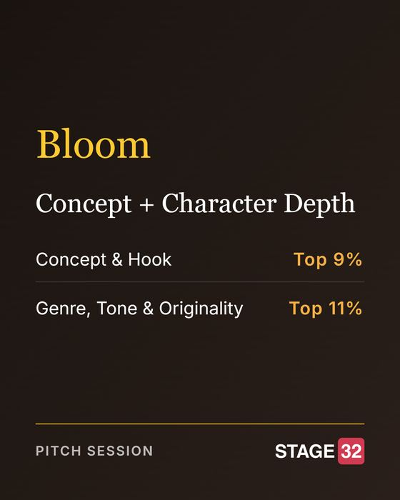
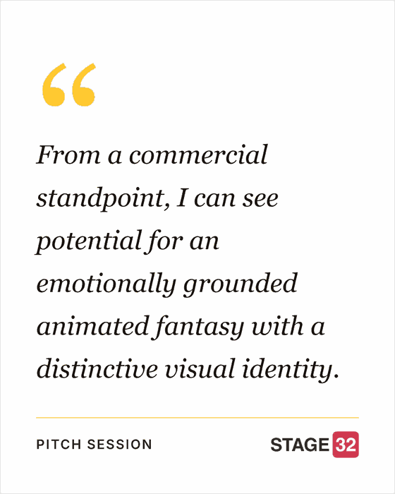

Before the Credits
Mark Anderson — From a Song to an Animated Feature: The Story Behind BLOOM
How Bloom grew from a song written late one night into an animated musical feature, and the collaborators and funding it is now looking for.
Bloom · Recognition & Press
Bloom is an original animated musical feature: a lonely girl, a boy who claims he used to be a tree, and an ancient forest worth saving. Here is what the industry has said about it so far.
Stage 32 · Pitch Session · October 2026
Bloom was shortlisted by a producer after a Stage 32 pitch session, scoring in the top 9% for Concept & Hook and the top 11% for Genre, Tone & Originality.


FilmPlatforms · Global Film Industry Forum
FilmPlatforms selected Mark and Bloom for a Member Spotlight video, shared on their YouTube channel.
Before the Credits
How Bloom grew from a song written late one night into an animated musical feature, and the collaborators and funding it is now looking for.